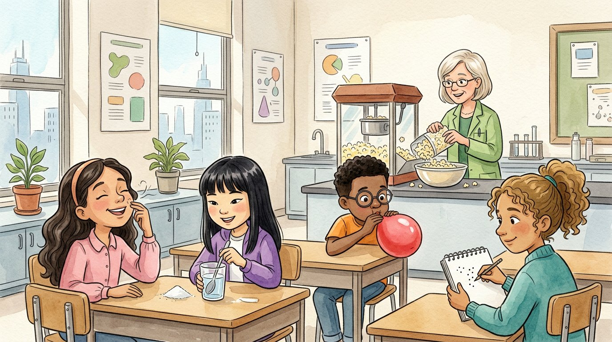

Grade 5 · Science · 5-PS1-1
The popcorn mystery
A story about the tiny particles that make up all matter.
El misterio de las palomitas. Un cuento sobre las partículas diminutas que forman toda la materia.
Science words you will learn
Tap a green word to see what it means.
Toca una palabra verde para ver qué significa. Con la ayuda activada, verás también la definición en español.
The story
El cuento está en inglés. Pulsa «Listen to the story» para escucharlo y toca las palabras verdes cuando no entiendas una.
On the first day of fifth grade science, Ms. Kowalski stood at the back of the room with a popcorn machine. "Before we start," she said, "nobody turn around. Just raise your hand when you notice something."
The machine began to pop. A few seconds later, Selena raised her hand from the very front row. "Popcorn!" she said. "I can smell it all the way up here. But I can't see anything flying through the air."
"Good observation," said Ms. Kowalski. "Here's the mystery: how did the smell get to your nose?" Elías guessed that the popcorn had magic powers. Ms. Kowalski laughed. "Close, but not quite. The answer is that all is made of tiny ."
Tiny particles from the hot popcorn mixed into the air and spread across the room until they reached Selena's nose. "They are much too small to see," the teacher said, "but your nose can detect them."
Then she gave Sophia a glass of water and a spoonful of sugar. Sophia stirred and stirred, and the sugar disappeared. "It's gone," said Israel. "It's not gone," said Ms. Kowalski. "The sugar . The sugar was already made of tiny particles. When it dissolved, those particles separated from one another and spread throughout the water."
"Prove it," said Israel, crossing his arms. "In science, we never taste what we are testing," said Ms. Kowalski. She held up a shallow dish from the windowsill. "Last week I left a little sugar water in this dish." The water was gone, and the bottom of the dish was covered with tiny white crystals. "The water evaporated, but the sugar stayed behind," said Sophia. "So the sugar was in the water the whole time." "That's ," said Ms. Kowalski. "We can't see the particles, but we can find out that they're there."
Next, Daniel blew into a red balloon until his cheeks looked like apples. The balloon grew bigger and bigger. "But air is nothing," Elías said. "How can nothing make a balloon get so big?"
"Air is not nothing," said the teacher. "Air is a , and a gas is matter too." "Billions of air particles bounce around inside the balloon and push on it from the inside. That pushing is what makes the balloon bigger." Daniel tied the knot and tapped the balloon. It felt tight and full.
Athena was busy drawing in her sketchbook: a balloon full of little dots, and a glass of water with sugar dots spread all around. "This is a ," she said. "It helps me explain things that are too small to see." Ms. Kowalski hung the drawing on the wall. Then she passed out the popcorn, and Israel declared that this was the best mystery he had ever solved with his mouth.
Glossary
- matter
- Anything that takes up space and has weight. Solids, liquids and gases are all matter.
- materia: Todo lo que ocupa espacio y tiene peso. Los sólidos, los líquidos y los gases son materia.
- particle
- A tiny piece of matter, much too small to see, even with a magnifying glass.
- partícula: Un trocito de materia, demasiado pequeño para verlo, aun con una lupa.
- gas
- Matter that has no shape of its own and spreads out to fill any space, like air.
- gas: Materia que no tiene forma propia y se esparce hasta llenar todo el espacio, como el aire.
- dissolve
- When the tiny particles of a substance separate from one another and spread evenly through a liquid, so they can't be seen.
- disolverse: Cuando las partículas diminutas de una sustancia se separan unas de otras y se reparten por un líquido, de modo que ya no se ven.
- evidence
- Facts or observations that show whether an idea is true.
- evidencia: Datos u observaciones que muestran si una idea es verdadera.
- model
- A drawing or object that helps explain something too small, too big or too far to see.
- modelo: Un dibujo u objeto que ayuda a explicar algo demasiado pequeño, grande o lejano para verlo.
Questions
Choose the correct answer. If you make a mistake, the story shows you where the answer is.
Elige la respuesta correcta. Si te equivocas, el cuento te muestra dónde está la respuesta.
-
Question A. How did the smell of popcorn reach Selena in the front row?
¿Cómo llegó el olor de las palomitas hasta Selena, en la primera fila?
Tiny particles from the popcorn mixed into the air and spread across the room until they reached Selena's nose.
-
Question B. What happened to the sugar in the water?
¿Qué le pasó al azúcar en el agua?
The sugar dissolved: its tiny particles separated from one another and spread throughout the water.
-
Question C. What evidence showed that the sugar was still in the water?
¿Qué evidencia mostró que el azúcar seguía en el agua?
When the water in the dish evaporated, sugar crystals were left behind, so the sugar was in the water the whole time.
-
Question D. Why did the balloon get bigger?
¿Por qué se hizo más grande el globo?
Billions of air particles bounce around inside the balloon and push on it from the inside.
-
Question E. Why did Athena draw a model?
¿Por qué Athena dibujó un modelo?
A model helps us explain things that are too small to see, like particles.
Challenge: explain your thinking
Explain with a model
Someone sprays perfume in one corner of a room. A minute later, you smell it in the other corner. Draw a model with dots for particles and explain what happened.
Explica con un modelo. Alguien rocía perfume en una esquina del salón. Un minuto después, lo hueles en la otra esquina. Dibuja un modelo con puntos como partículas y explica qué pasó.
Answer in your notebook or talk it over with a classmate. Use evidence from the story.
Responde en tu cuaderno o coméntalo con un compañero. Usa evidencia del cuento.
Check your thinking
Your model can show many dots close together near the spray bottle, and then dots spread out across the room. The perfume particles are too small to see, but they mix into the air and travel until some of them reach your nose.